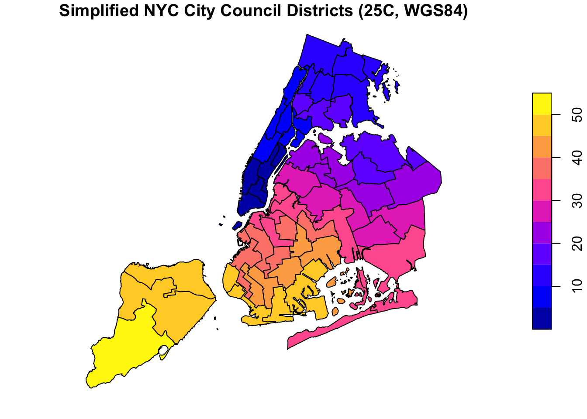
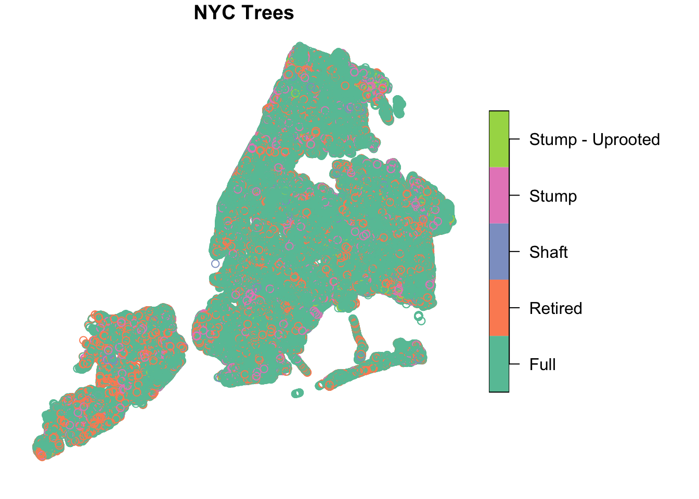
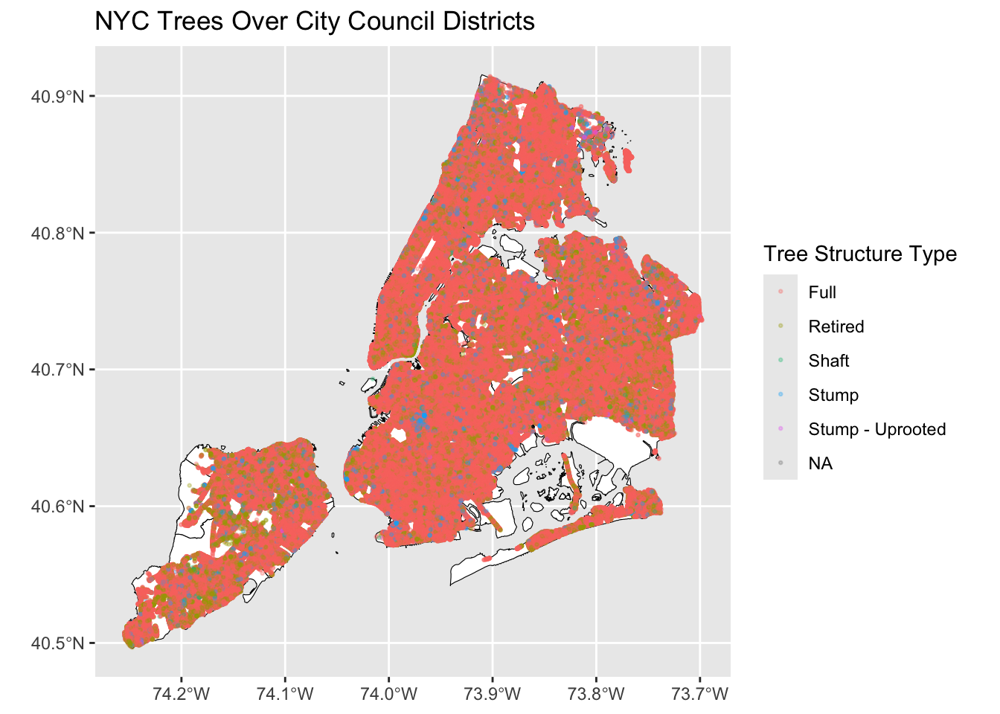
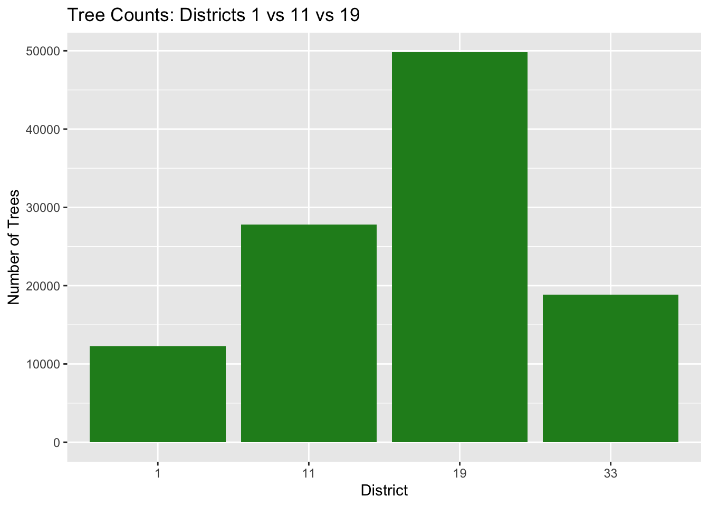
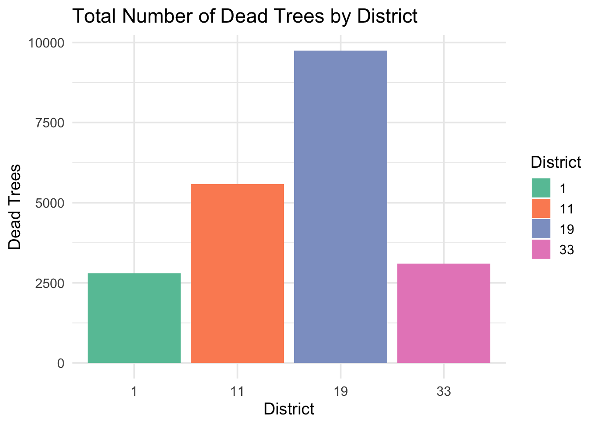

Mini-Project #03: Visualizing and Maintaining the Green Canopy of NYC
Introduction
New York City has a large and valuable urban tree canopy that provides important environmental and community benefits. In this mini-project, Data from the NYC TreeMap will be used to analyze the distribution of trees across the city. The data of NYC City Council Districts is achieved from the NYC Department of Planning site. Using spatial tools in R, I will map tree locations, connect them to City Council districts, and explore key patterns. Finally, I will propose a program or recommendation to help NYC Parks support and maintain the city’s trees.
Data Acquisition
Two datasets were downloaded: NYC City Council district boundaries and the NYC TreeMap street tree data. The district shapefile was simplified and converted to WGS84, and the tree dataset was retrieved from NYC’s open data portal. Both were loaded into R using sf and prepared for mapping and spatial analysis.

Data Integration and Initial Exploration
Mapping NYC Trees
This map displays all NYC street trees as points layered over the 51 City Council districts. The district polygons provide the city’s political boundaries, while each tree is shown according to its structural condition (such as Full, Retired, Shaft, or Stump). Because more than a million trees are plotted, the map appears dense, but it clearly shows how trees are spread across the city and highlights areas with especially high concentrations of street trees.
Code
# ggplot map with two layers
ggplot() +
# Council district polygons
geom_sf(data = nyc_council,
fill = "white",
color = "black",
size = 0.3) +
# Tree points (many points → use high transparency)
geom_sf(data = nyc_trees,
aes(color = tpstructure),
alpha = 0.3,
size = 0.5) +
labs(
title = "NYC Trees Over City Council Districts",
color = "Tree Structure Type"
) 
District-Level Analyses of Trees
The chart below gives us a general view about the trees in district-level.
Code
# Spatial join: tree point to its district regions
trees_joined <- st_join(
nyc_trees,
nyc_council,
join = st_intersects # points to regions
)
# Create a borough column to the joined data
trees_joined <- trees_joined |>
mutate(
borough = case_when(
CounDist >= 1 & CounDist <= 10 ~ "Manhattan",
CounDist >= 11 & CounDist <= 18 ~ "Bronx",
CounDist >= 19 & CounDist <= 32 ~ "Queens",
CounDist >= 33 & CounDist <= 48 ~ "Brooklyn",
CounDist >= 49 & CounDist <= 51 ~ "Staten Island",
TRUE ~ NA
)
)
district_summary <- trees_joined |>
st_drop_geometry() |>
group_by(CounDist) |>
summarise(
total_trees = n(),
dead_trees = sum(tpstructure %in% c("Stump", "Stump - Uprooted", "Retired"), na.rm = TRUE),
dead_fraction = dead_trees / total_trees,
species_mode = names(sort(table(genusspecies), decreasing = TRUE))[1],
area = unique(Shape_Area),
density = total_trees / area
) |>
arrange(desc(total_trees))
library(DT)
datatable(
district_summary,
colnames = c("CounDist",
"Total Trees",
"Dead Trees",
"Dead Fraction",
"Species Mode",
"Area",
"Density"
),
options = list(
searching = FALSE,
info = FALSE,
paging = FALSE, # 只有一行时关闭分页
autoWidth = TRUE
)
) |>
formatCurrency(
columns = c("dead_fraction", "area", "density"),
currency = "", # 不加美元符号
interval = 3,
mark = ",",
digits = 2
) |>
formatCurrency(
columns = c( "CounDist", "total_trees", "dead_trees"),
currency = "",
interval = 3,
mark = ",",
digits = 0
)1. Most Trees
Council district 51 has the most trees.
Code
Most_trees <- district_summary |> slice_max(total_trees, n=1)
library(DT)
datatable(
Most_trees,
colnames = c("CounDist",
"Total Trees",
"Dead Trees",
"Dead Fraction",
"Species Mode",
"Area",
"Density"
),
options = list(
searching = FALSE,
info = FALSE,
paging = FALSE, # 只有一行时关闭分页
autoWidth = TRUE
)
) |>
formatCurrency(
columns = c("dead_fraction", "area", "density"),
currency = "", # 不加美元符号
interval = 3,
mark = ",",
digits = 2
) |>
formatCurrency(
columns = c( "CounDist", "total_trees", "dead_trees"),
currency = "",
interval = 3,
mark = ",",
digits = 0
)2. Highest Density
Council district 7 has the highest density of trees.
Code
Highest_density <- district_summary |> slice_max(density, n=1)
library(DT)
datatable(
Highest_density,
colnames = c("CounDist",
"Total Trees",
"Dead Trees",
"Dead Fraction",
"Species Mode",
"Area",
"Density"
),
options = list(
searching = FALSE,
info = FALSE,
paging = FALSE, # 只有一行时关闭分页
autoWidth = TRUE
)
) |>
formatCurrency(
columns = c("dead_fraction", "area", "density"),
currency = "", # 不加美元符号
interval = 3,
mark = ",",
digits = 2
) |>
formatCurrency(
columns = c( "CounDist", "total_trees", "dead_trees"),
currency = "",
interval = 3,
mark = ",",
digits = 0
)3. Highest Fracition
District 32 has highest fraction of dead trees out of all trees.
Code
Highest_fraction <- district_summary |> slice_max(dead_fraction, n=1)
library(DT)
datatable(
Highest_fraction,
colnames = c("CounDist",
"Total Trees",
"Dead Trees",
"Dead Fraction",
"Species Mode",
"Area",
"Density"
),
options = list(
searching = FALSE,
info = FALSE,
paging = FALSE, # 只有一行时关闭分页
autoWidth = TRUE
)
) |>
formatCurrency(
columns = c("dead_fraction", "area", "density"),
currency = "", # 不加美元符号
interval = 3,
mark = ",",
digits = 2
) |>
formatCurrency(
columns = c( "CounDist", "total_trees", "dead_trees"),
currency = "",
interval = 3,
mark = ",",
digits = 0
)4. Most Common Tree Species in Manhattan
Gleditsia triacanthos var. inermis – Thornless honeylocust is the most common tree species in Manhattan.
Code
Most_in_Manhattan <- trees_joined |>
filter(borough == "Manhattan") |>
st_drop_geometry() |>
group_by(genusspecies) |>
summarize(total_trees_in_Manhattan = n()) |>
arrange(desc(total_trees_in_Manhattan)) |>
slice_max(total_trees_in_Manhattan, n=1)
library(DT)
datatable(
Most_in_Manhattan,
colnames = c("Genusspecies",
"Total Trees In Manhattan"
),
options = list(
searching = FALSE,
info = FALSE,
paging = FALSE, # 只有一行时关闭分页
autoWidth = TRUE
)
) |>
formatCurrency(
columns = "total_trees_in_Manhattan",
currency = "",
interval = 3,
mark = ",",
digits = 0
)5. Tree Closest to Baruch’s Campus
The result shows that the closest tree to Baruch College is a Liquidambar styraciflua (Sweetgum), located approximately 22.7 meters from the campus. The tree is in Good condition and is situated within Manhattan Council District 2.
Code
# Create point for Baruch College
new_st_point <- function(lat, lon, ...){
# st_sfc expects x, y which flips the normal lat (N/S) + lon (W/E) ordering
st_sfc(point = st_point(c(lon, lat))) |>
st_set_crs("WGS84")
}
baruch_point <- new_st_point(40.74028, -73.98333) # Converted from Wikipedia
# Compute distance and find the closet tree to Baruch
trees_joined |>
mutate(trees_distance = st_distance(geometry, baruch_point)) |>
slice_min(trees_distance)Simple feature collection with 1 feature and 18 fields
Geometry type: POINT
Dimension: XY
Bounding box: xmin: -73.98318 ymin: 40.74045 xmax: -73.98318 ymax: 40.74045
Geodetic CRS: WGS 84
tpcondition stumpdiameter riskratingdate riskrating objectid
1 Good <NA> 2024-10-14 17:27:58 3 15697242
globalid tpstructure
1 8C1EE88F-882D-4C5C-B019-E16F0956B646 Full
plantingspaceglobalid createddate dbh planteddate
1 8D106CF2-18C5-4826-BA63-DE685E0BEB84 2024-10-14 17:26:42 5 <NA>
updateddate genusspecies CounDist Shape_Leng
1 2024-10-14 17:27:58 Liquidambar styraciflua - sweetgum 2 41619.72
Shape_Area borough trees_distance geometry
1 48322121 Manhattan 22.70277 [m] POINT (-73.98318 40.74045)Government Project Design
Project Title
NYC Parks Proposal — Improving Tree Health around the Chinatown Area (CounDist 1) ## Project Description This project proposes a focused tree-revitalization effort in NYC Council District 1, serving the neighborhoods of Lower Manhattan, Chinatown, and the Financial District. Compared with nearby Districts 11 in the Bronx, 19 in Queens, and 33 in Brooklyn, District 1 shows a notably high proportion of dead or declining trees relative to its smaller land area.
To address this, the project will remove dead or damaged trees, replace old stumps, and plant new, healthy trees in locations that currently lack shade, greenery, and environmental protection. The goal is to restore the district’s aging tree canopy, improve air quality, reduce heat exposure, and enhance the overall streetscape for residents, workers, and visitors.
The Desired Scope of The Project
We propose replacing all dead trees in District 1 (1465 trees), removing existing stumps (131 stumps), and planting approximately 1915 new trees to restore canopy coverage and prevent further decline.
Code
library(dplyr)
# Filter District 1
district1 <- trees_joined |>
filter(CounDist == 1)
# Number of dead trees (X)
dead_trees <- district1 |>
filter(tpcondition == "Dead") |>
nrow()
# Number of stumps (Y)
stumps <- district1 |>
filter(tpcondition == "Stump" | dbh == 0) |>
nrow()
# Recommended new plantings (Z): replace dead + replace stumps + 20% buffer
new_plantings <- round((dead_trees + stumps) * 1.20)
dead_trees[1] 1465Code
stumps[1] 131Code
new_plantings[1] 1915Zoomed-In Map of Trees in District 1
District 1 covers the southern tip of Manhattan, including Chinatown and the Financial District. It is a busy, highly developed area with limited space for trees. Most trees in the district are in good or excellent condition, but there are some stressed or older trees in crowded streets near Chinatown. Because the area gets so much foot traffic and heat, maintaining and planting trees here is important for shade, cleaner air, and improving daily comfort for residents and visitors.
Code
library(sf)
library(dplyr)
library(ggplot2)
# 1. Select District 1 polygon (Area around Chinatown)
dist1_poly <- nyc_council |>
filter(CounDist == 1)
# 2. Keep only trees inside District 1 (geospatial intersection)
trees_dist1 <- nyc_trees |>
st_filter(dist1_poly)
# 3. Plot the zoomed-in district tree map
ggplot() +
geom_sf(data = dist1_poly, fill = "grey95", color = "black") +
geom_sf(data = trees_dist1, aes(color = tpcondition), size = 0.5, alpha = 0.7) +
scale_color_manual(
values = c(
"Excellent" = "darkgreen",
"Good" = "forestgreen",
"Fair" = "goldenrod",
"Poor" = "red"
)
) +
labs(
title = "Zoomed-In Map of Trees in NYC Council District 1",
subtitle = "District 1 includes Chinatown, Lower Manhattan, and the Financial District",
color = "Tree Condition"
) +
theme_minimal() +
theme(
plot.title = element_text(size = 16, face = "bold"),
legend.position = "right"
)
Comparison of Tree Density
District 1 stands out as the most underserved district, with: * the fewest trees, * the highest percentage of dead trees, and * low tree density. This makes District 1 the strongest candidate for new funding and targeted tree-planting or maintenance programs.
Code
# Select the districts you want to compare
districts_to_compare <- c(1, 11, 19, 33)
comparison_table <- district_summary |>
filter(CounDist %in% districts_to_compare) |>
arrange(CounDist)
library(DT)
datatable(
comparison_table,
colnames = c("CounDist",
"Total Trees",
"Dead Trees",
"Dead Fraction",
"Species Mode",
"Area",
"Density"
),
options = list(
searching = FALSE,
info = FALSE,
paging = FALSE, # 只有一行时关闭分页
autoWidth = TRUE
)
) |>
formatCurrency(
columns = c("dead_fraction", "area", "density"),
currency = "", # 不加美元符号
interval = 3,
mark = ",",
digits = 5
) |>
formatCurrency(
columns = c( "CounDist", "total_trees", "dead_trees"),
currency = "",
interval = 3,
mark = ",",
digits = 0
)Code
library(ggplot2)
df_compare <- trees_joined |>
filter(CounDist %in% c(1, 11, 19, 33)) |>
group_by(CounDist) |>
summarise(tree_count = n())
ggplot(df_compare, aes(x = factor(CounDist), y = tree_count)) +
geom_col(fill="forestgreen") +
labs(title="Tree Counts: Districts 1 vs 11 vs 19",
x="District", y="Number of Trees")
Comparison of Dead Tree Fractions
District 1 has the highest proportion of dead trees (about 23%), noticeably higher than Districts 11, 19, and 33. District 33 has the lowest fraction of dead trees, while Districts 11 and 19 fall in the middle. This suggests that District 1 faces greater tree health challenges and would benefit most from targeted maintenance or replanting efforts.
Code
compare_plot_data <- district_summary |>
filter(CounDist %in% c(1, 11, 19, 33))
ggplot(compare_plot_data, aes(x = factor(CounDist), y = dead_fraction, fill = factor(CounDist))) +
geom_col() +
labs(
title = "Proportion of Dead Trees by District",
x = "Council District",
y = "Dead Tree Fraction",
fill = "District"
) +
theme_minimal(base_size = 14)
Comparison of Dead Trees
The figure shows that although other districts (especially 19) have more dead trees in absolute terms, District 1’s problem is proportionally worse. Together, the charts highlight that District 1 faces a more concentrated tree-health crisis and is a strong candidate for targeted intervention.
Code
district_summary |>
filter(CounDist %in% c(1, 11, 19, 33)) |>
ggplot(aes(x = factor(CounDist), y = dead_trees, fill = factor(CounDist))) +
geom_col() +
scale_fill_brewer(palette = "Set2") +
labs(
title = "Total Number of Dead Trees by District",
x = "District",
y = "Dead Trees",
fill = "District"
) +
theme_minimal(base_size = 14)
Summary
This project aims to revitalize the street-tree canopy in NYC Council District 1, which has a higher share of dead or declining trees than comparable districts in the Bronx, Queens, and Brooklyn. The plan focuses on removing hazardous or dead trees, replacing old stumps, and planting new trees to increase shade, improve air quality, and enhance the overall environment in Lower Manhattan, Chinatown, and the Financial District.